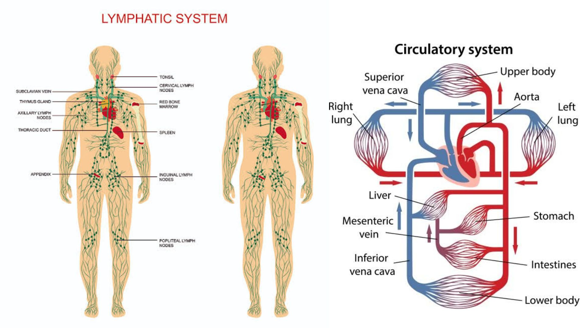

ระบบหมุนเวียนเลือดและระบบน้ำเหลือง

ระบบหมุนเวียนเลือดมีหน้าที่ลำเลียงสารต่าง ๆ ไปยังเซลล์ทั่วร่างกาย และนำของเสียจากเซลล์ไปยังอวัยวะที่ทำหน้าที่กำจัดของเสีย ระบบนี้มีความสำคัญต่อการรักษาสมดุลของร่างกาย เพราะช่วยนำออกซิเจนจากปอดและสารอาหารจากระบบย่อยอาหารไปยังเซลล์ รวมถึงลำเลียงฮอร์โมนและสารต่าง ๆ ไปยังบริเวณที่ต้องการ
อวัยวะสำคัญของระบบหมุนเวียนเลือดคือ หัวใจ ซึ่งเป็นกล้ามเนื้อที่ทำหน้าที่สูบฉีดเลือดอย่างต่อเนื่อง หัวใจของมนุษย์แบ่งออกเป็น 4 ห้อง ได้แก่ ห้องบนขวา ห้องล่างขวา ห้องบนซ้าย และห้องล่างซ้าย โดยหัวใจด้านขวาจะรับเลือดที่มีออกซิเจนน้อยและส่งไปยังปอดเพื่อแลกเปลี่ยนแก๊ส ส่วนหัวใจด้านซ้ายจะรับเลือดที่มีออกซิเจนสูงจากปอดและสูบฉีดไปเลี้ยงส่วนต่าง ๆ ของร่างกาย
หลอดเลือดมี 3 ประเภทหลัก ได้แก่ หลอดเลือดแดง หลอดเลือดดำ และหลอดเลือดฝอย หลอดเลือดแดงทำหน้าที่นำเลือดออกจากหัวใจ หลอดเลือดดำนำเลือดกลับเข้าสู่หัวใจ ส่วนหลอดเลือดฝอยมีขนาดเล็กมากและเป็นบริเวณที่เกิดการแลกเปลี่ยนออกซิเจน สารอาหาร และของเสียระหว่างเลือดกับเซลล์ เลือดประกอบด้วยพลาสมา เม็ดเลือดแดง เม็ดเลือดขาว และเกล็ดเลือด ซึ่งแต่ละส่วนมีหน้าที่แตกต่างกัน เช่น เม็ดเลือดแดงช่วยลำเลียงออกซิเจน เม็ดเลือดขาวช่วยป้องกันเชื้อโรค และเกล็ดเลือดช่วยให้เลือดแข็งตัวเมื่อเกิดบาดแผล
ระบบน้ำเหลือง ทำงานร่วมกับระบบหมุนเวียนเลือด โดยทำหน้าที่รวบรวมของเหลวส่วนเกินที่อยู่ระหว่างเซลล์แล้วนำกลับเข้าสู่กระแสเลือด นอกจากนี้ยังมีบทบาทสำคัญในการป้องกันเชื้อโรคและสิ่งแปลกปลอม โดยมี ต่อมน้ำเหลือง ม้าม ต่อมไทมัส และทอนซิล เป็นอวัยวะที่เกี่ยวข้องกับระบบนี้
การไหลเวียนเลือดของมนุษย์มีลักษณะเป็นระบบปิด โดยเลือดจะไหลอยู่ภายในหัวใจและหลอดเลือดตลอดเวลา หัวใจทำหน้าที่สูบฉีดเลือดเป็นจังหวะอย่างต่อเนื่อง ทำให้เลือดสามารถเดินทางไปยังอวัยวะต่าง ๆ และกลับเข้าสู่หัวใจได้ การไหลเวียนเลือดมีทั้ง การไหลเวียนเลือดระหว่างหัวใจกับปอด ซึ่งช่วยแลกเปลี่ยนแก๊ส และ การไหลเวียนเลือดระหว่างหัวใจกับส่วนต่าง ๆ ของร่างกาย ซึ่งช่วยนำออกซิเจนและสารอาหารไปเลี้ยงเซลล์
เม็ดเลือดแดง มีฮีโมโกลบินที่สามารถจับกับออกซิเจนและช่วยลำเลียงออกซิเจนไปยังเซลล์ทั่วร่างกาย นอกจากนี้ยังช่วยลำเลียงคาร์บอนไดออกไซด์บางส่วนกลับไปยังปอด ส่วน เม็ดเลือดขาว มีหน้าที่สำคัญในการป้องกันและกำจัดเชื้อโรค ขณะที่ เกล็ดเลือด ช่วยในการแข็งตัวของเลือดเมื่อเกิดบาดแผล เพื่อป้องกันการสูญเสียเลือดมากเกินไป และพลาสมาทำหน้าที่เป็นของเหลวที่ช่วยลำเลียงสารต่าง ๆ
ระบบน้ำเหลืองมีความสัมพันธ์อย่างใกล้ชิดกับระบบภูมิคุ้มกัน เพราะในต่อมน้ำเหลืองมีเซลล์ภูมิคุ้มกันที่สามารถตรวจจับและตอบสนองต่อสิ่งแปลกปลอมได้ เมื่อมีเชื้อโรคเข้าสู่ร่างกาย ต่อมน้ำเหลืองบางบริเวณอาจบวมขึ้นเนื่องจากมีการทำงานของเซลล์ภูมิคุ้มกันเพิ่มขึ้น นอกจากนี้ ม้าม ยังช่วยกรองเลือดและมีบทบาทเกี่ยวข้องกับระบบภูมิคุ้มกัน ส่วน ต่อมไทมัส เป็นบริเวณสำคัญในการพัฒนาของเซลล์ T
ระบบน้ำเหลืองยังมีบทบาทในการดูดซึมไขมันจากระบบย่อยอาหาร โดยไขมันบางส่วนจะถูกดูดซึมเข้าสู่หลอดน้ำเหลืองขนาดเล็กภายในวิลลัสของลำไส้เล็ก ก่อนจะถูกลำเลียงเข้าสู่ระบบหมุนเวียนเลือดในภายหลัง จึงเห็นได้ว่าระบบหมุนเวียนเลือด ระบบน้ำเหลือง และระบบย่อยอาหารมีการทำงานร่วมกันอย่างใกล้ชิด